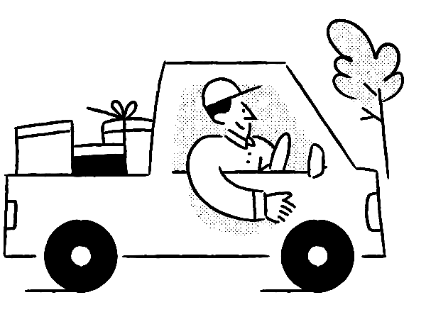
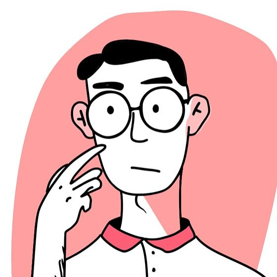
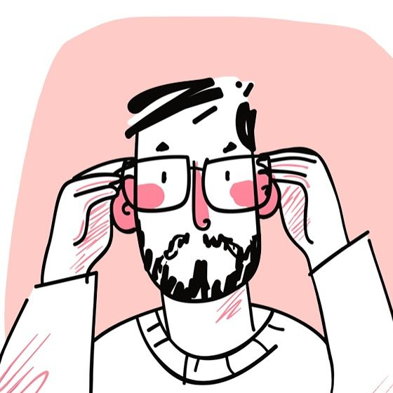
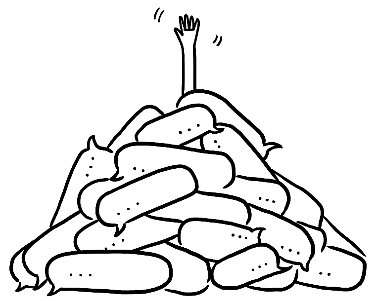
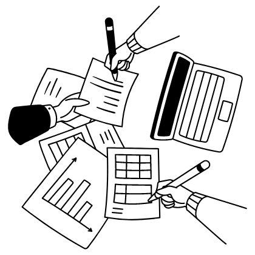
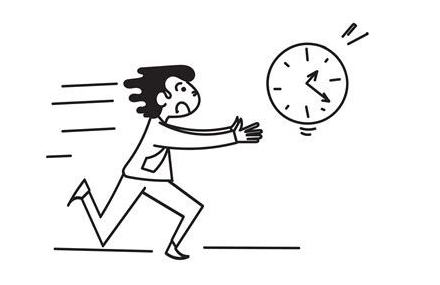

Valmo is Meesho's logistics network. It books trucks from independent transporters to move parcels between hubs on long-distance runs, and pays them per completed trip.
What I designed
Transporters ran their trips over chat threads, spreadsheets and phone calls, then waited weeks to find out what they were owed. I designed the Trips panel: one place where every trip has a single state, a single next action, and a visible route to the money.

My role
I was the sole product designer. I owned the panel end to end, from research to handoff.
Team
PMProduct Manager(Ops-tech)
BABusiness Analyst(Data & rules)
BXBusiness Associate(Transporter ops)
+33 Engineers(Build & rollout)
Outcomes
3× fewer
Payment calls per transporter
< 1 day
From trip completion to confirmation
90%
Of trips confirmed without a call
Each trip needed one record both sides trust
Every trip ends in a payout, so every trip needs a record that the transporter and Valmo both trust. Two groups depended on that record every day.

Transporters
Own the trucks and run roughly 30 to 100 trips a day from a desk. Paid per completed trip.

Valmo hub & finance teams
Log placements, match trip records and release payouts.
By 2025, the way trips were tracked was working against the people who ran them.
A chat thread is not a record
A thread works for a handful of trips. At roughly twenty a day it stops being something you can search or trust, and most transporters ran somewhere between 30 and 100.

One trip lived in five places
The hub chat, Valmo's placement sheet, the transporter's own spreadsheet and an email chain each held part of the truth. Finance then matched all four by hand before any money moved.

One transporter, one desk
~{{ tripsN }}trips a day
Most ran somewhere between 30 and 100. Watch what a single chat thread holds, or drag to try your own number.
~20 tracked
~{{ lostN }} buried
~20 a day is roughly what a chat thread stays readable at. Past that, trips scroll out of view.
~{{ lostPct }} of trips end up buried under forwards and replies, and someone has to call to find them.
Where a trip lived
A
Chat thread
with the hub team
B
Placement sheet
kept by Valmo
C
His spreadsheet
kept by him
D
Email chain
for anything formal
Where it got paid
EFinanceMatches A–D by hand, then releases the payout.
Nobody refused to pay him. The records just never agreed on what he was owed.
Getting paid depended on who picked up the phone
Every question about a trip, from where the truck was to how much he was owed, ended in a call to one Valmo number the transporter happened to have. Answers depended on who was on shift.
Core problem statement
“Help transporters see where every trip stands and what they are owed, so getting paid never depends on a phone call.”
Synthesised from transporter research and the Valmo ops team
Where the calls came from
CHATS DON'T SCALE
9:41
Route 17 · hub groupHub team, drivers, you
9:41
IMS trip plan · hub groupForwarded trip plan and replies
A chat thread stopped being a record
Real hub groups, a night apart. Vehicle numbers, drivers and routes arrive as free text, get corrected in replies and are re-forwarded. At twenty trips a day, nothing in the thread can be searched, sorted or trusted. Names, phone numbers and plates are blurred.
WHERE IS MY TRUCK?
TR-2511-0218Status unknown
TR-2511-0203Not logged?
TR-2511-0196Last call: 3 hr ago
He couldn't see the truck or the trip
He couldn't tell where a truck was, or whether Valmo had logged the trip at all.
ONE PHONE NUMBER
Calling Valmo Ops…4th call · no answer
Payment for Nov trips?Pending
How much for TR-0188?Pending
Every payment question was a call
Earnings, confirmations and complaints all went through one number, so answers depended on who picked up.
NO WAY TO DISAGREE
Re: Re: Re: vehicle number14 replies
Fwd: amount wrong for tripNo reply
Re: challan copy attached2 weeks ago
A wrong amount had no fix
A wrong vehicle number or payout turned into an email chain with no owner, no deadline and no status.
Transporters never lacked trips, only answers
In research, transporters described the same day over and over. The gap was not knowing the state of a trip and not knowing what they would be paid for it.
These are the questions they asked every day, grouped by topic. They are recurring themes, not verbatim quotes.
About the trip
TRANSPORTER NOTE
Which of last night's trips still need a truck?
TRANSPORTER NOTE
When will this truck arrive?
TRANSPORTER NOTE
Why is the vehicle number wrong again?
TRANSPORTER NOTE
Did Valmo even log this trip?
About the money
TRANSPORTER NOTE
When will I be paid, and how much?
TRANSPORTER NOTE
Who do I call about this payment?
TRANSPORTER NOTE
Where do I raise a dispute about this trip?
TRANSPORTER NOTE
Why is this amount different from what I was told?
“I don't know when and how much I'll be paid.”A transporter, in research
What the panel couldn't change

01
Placement time is a hard rule
A trip is auto-rejected at placement time unless both a truck and a driver are assigned. The panel could explain the rule, not bend it.
02
Two languages, one screen
Transporters read English slowly and decide in Hindi. Every place where a misread costs money had to carry both.
03
Some trips stay outside the panel
SC-SC and FM Carting trips are paid through the existing billing process. The panel had to say so, not hide them.
04
Contracts didn't exist yet
Rates were not yet linked to contracts. Where a contract was missing, the panel had to show the gap honestly.
One state, one action, one route to the money
Research with transporters and the ops team gave me three rules:
01
One trip, one state. Every trip sits in exactly one tab.
02
One next action. Each tab has a single job, and one loud button.
03
Show the route to the money. Every rupee can be checked, confirmed or disputed.
One trip, five stages, one action each
Drag to compare
1Offered
2Truck set
3On the road
4Delivered
5Paid
Truck for BLR–DLS tonight?
11:42 PM
Haan, sending
11:58 PM
MH12 RT 8804
12:20 AM
Which trip is this for?
12:31 AM
Hub opsMissed call · 3rd today
Where is the truck?
2:14 AM
EMAIL · 14 repliesRe: Re: Re: amount wrong for tripPlease check the challan copy attached…
Payment for Nov trips?
Mon
Will check and revert
Thu
3 weeks later
1Offered
2Truck set
3On the road
4Delivered
5Paid
Pending AssignmentAssign by: 03:00 AMAccept
UpcomingDriver changed · RameshUpdate
In-TransitVapi · 2 min agoTrack
Completed₹30,000Dispute window till 18 NovConfirm
PaidConfirmed by you on 6 NovPayment will be initiatedConfirmed
BEFORE · CHATS & CALLSAFTER · TRIPS PANEL
Before, each stage of a trip lived in a different chat, call or email. After, each tab owns one stage and exactly one primary action.The redesigned Trips panel, running live. Click it to try it yourself.
Three versions that asked at the wrong moment
Each of these looked reasonable on paper. Each one moved a decision to the wrong moment for a transporter reading the screen literally.
Always-on Accept, with an error after the click
The first version kept Accept active and validated on click. It failed because the rule only appeared after he had already broken it.
WHY IT FAILED
An error after the click read as the system breaking, not as a rule.
Earlier exploration
Trip IDRouteVehiclePrimary DriverAction
TR-2511-0412Required: 32ft
BLR → DLSSelect vehicleSelect driverAccept
TR-2511-0431Required: 32ft
SJR → BYUSelect vehicleSelect driverAccept
Couldn't accept trip
Please select a vehicle and a driver first.
WHY IT FAILED
He learned the rule by failing it, one trip at a time.
A plain “Are you sure?” before rejecting
Rejecting a trip had real costs, but the confirmation only repeated the question. It failed because it asked him to judge a price it never showed.
WHY IT FAILED
One click, no visible consequence. Trips were dropped casually.
Earlier exploration
Trip IDRouteVehiclePrimary DriverAction
TR-2511-0412Required: 32ft
BLR → DLSSelect vehicleSelect driverAcceptReject
TR-2511-0431Required: 32ft
SJR → BYUSelect vehicleSelect driver
Reject trip?
Are you sure you want to reject TR-2511-0412?
CancelYes, reject
WHY IT FAILED
“Are you sure?” asks him to weigh a cost it never states.
One language switch for the whole panel
A single English/Hindi toggle looked tidy. It failed because the moments that need Hindi are few and expensive, like choosing a dispute category.
WHY IT FAILED
A toggle asks him to predict where he will struggle.
Earlier exploration
Raise DisputeEnglishहिंदी
What is wrong with this trip?Wrong distanceRoute changedWrong vehicle sizeWaiting chargesToll not added
WHY IT FAILED
He decides in Hindi exactly where money is at stake.
Five decisions that replace a phone call
1. Accept waits until the trip can run
Problem identified
A trip is auto-rejected at placement time unless both a truck and a driver are assigned. An always-active Accept button that threw a validation error looked, to him, like the system breaking.
What I ruled out
I ruled out an active button with an error after the click.
What I did
Accept stays grey until both pickers are filled, and the deadline is written out in words, not only in red. Hindi help sits on the rule itself.
The detail that mattered
Busy or wrong-size trucks are greyed out in the picker, so he can only pick one that can make the trip.
AUTOPLAY
2. Rejecting a trip shows its price first
Problem identified
Reject was one click with no visible consequence, so trips were dropped casually.
What I ruled out
I ruled out a plain “Are you sure?”.
What I did
The three real costs, cancellation fee, rating and lost earnings, sit above the reason picker. He sees the price before he commits.
The detail that mattered
Reasons are written in his words with Hindi underneath, and the confirmation tells him where the trip went.
AUTOPLAY
3. Hindi is printed where the money is
Problem identified
He reads English slowly and decides in Hindi. The dispute form is where a misread costs him money.
What I ruled out
I ruled out a language switch for the whole panel. A toggle asks him to predict where he will struggle.
What I did
All seven dispute categories carry a Hindi line underneath. Printing both costs only vertical space.
The detail that mattered
Every dispute gets an ID and one of 13 statuses he can watch, instead of a call he has to make.
AUTOPLAY
4. The payout tab breaks my column rule
Problem identified
Six columns is the right ceiling for a table he scans. But Completed is where he checks evidence before he agrees to an amount.
What I ruled out
I ruled out keeping six columns and moving the evidence a page deeper.
What I did
Seven columns, because a time dispute can't be checked from a single timestamp. Every empty cell is named, because each unnamed blank used to become a call.
The detail that mattered
The dispute window and “nothing to do here” for SC-SC and FM Carting trips are written in the row itself.
AUTOPLAY
5. Confirming a disputed trip shows the cost
Problem identified
Confirming locks a trip for payout and dismisses any open dispute on it. It is the one click that can't be undone.
What I ruled out
I ruled out letting Confirm dismiss the dispute silently.
What I did
The click opens a dialog that lists, in plain words, what he gives up: the dispute, the right to raise it again, and any payment beyond the current details.
The detail that mattered
Two exits only: Close, or Confirm & Dismiss.
AUTOPLAY
When the panel doesn't know, it says so
Most of the calls came from moments when the panel didn't know something. I designed each of those states on purpose.
6. Missing data is said out loud
No GPS, in words
“No GPS Present” appears in amber. The panel never fakes it with a stale position, and the last known place is shown as “Vapi · 3 hr ago”, not a blank.
Delays and cancellations explain themselves
“Delayed by 1hr” is written in the row, and an auto-cancelled trip says why. His own reason stays on the record.
AUTOPLAY
In-Transit and Cancelled tabs, playing through each state on its own.
7. Missing trips are traced from the challan
The Report Missing Trip form shows two photographed challans with the Trip ID boxed, so he copies it from the slip the driver already carries. A Trip ID that already exists opens that trip instead of creating a support ticket.
8. Jargon is defined, and disputes can reopen
STA, ATA, STD and ATD are defined on the same panel that uses them. A rejected dispute reads “Can be reopened till 14 Dec” instead of closing permanently.
Fewer payment calls after release
TRIPS PANEL OUTCOMES
3×
Fewer payment calls per transporter
< 1 day
From trip completion to confirmation
90%
Of trips confirmed without a call
WHAT SHIPPED
0
Trips lost between chat and record
5
Lifecycle states, one tab each
150+
Screens designed and handed off
7
Bilingual dispute categories
13
Dispute statuses he can track
Every trip is now a record he can open, not a message he has to find. Confirming a trip here is what starts his payout.
Three rules I would set differently now
A rule for scanning is not a rule for proof
Six columns was right everywhere except the one tab where he checks what he is owed. I would decide column limits per task, not per product.
Treat every empty cell as a design decision
Each blank I left unnamed came back as a phone call. Next time I would audit every absent value before handoff.
Ship the seams honestly
Where contracts didn't exist yet, the panel said “No RFQ Linked” instead of hiding the gap. That seam became the next product.